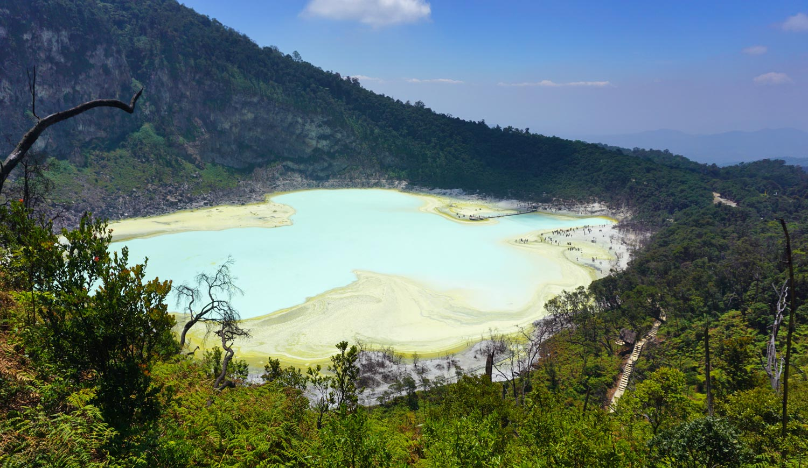
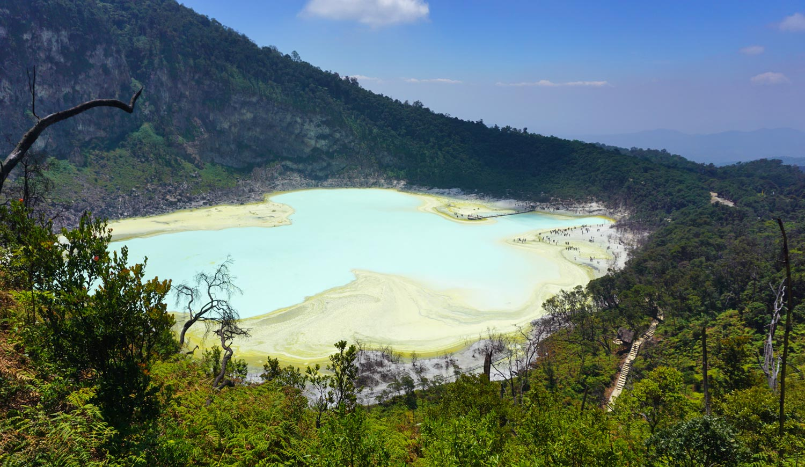

Sisikon, Switzerland
The mountains rise like steadfast sentinels,
their shoulders robed in shadows and light,
and the water below—unfathomably calm—
gathers every trembling sky into its arms.
The mountains rise like steadfast sentinels,
their shoulders robed in shadows and light,
and the water below—unfathomably calm—
gathers every trembling sky into its arms.
Streets unfurl like rivers of stone,
where spires pierce the tempered sky,
and the air hums with the quiet weight of time—
yet the lake, glass-breathed and eternal,
holds the city’s reflection tenderly,
as though even grandeur must learn to rest.
 


Hills cradle the city in green embrace,
clouds drifting low like forgotten veils,
and every street hums with a restless warmth—
a weaving of markets, laughter, and rain,
while the mountains, patient and unspoken,
keep watch over the pulse of it all.